ERP / Corp IT
客户、合同、销售、账单、财务报表、审批、水电表、商户入驻、收据打印等真实业务模块。
Enterprise Application Developer | ERP Systems | Full-Stack Delivery
Java 全栈工程师 / ERP 与内部应用系统 / 生产级交付
具备商业 ERP 系统二次开发、生产问题处理和独立产品交付经验，能把需求拆成数据模型、接口、权限、任务调度、前端页面、文档与上线流程。
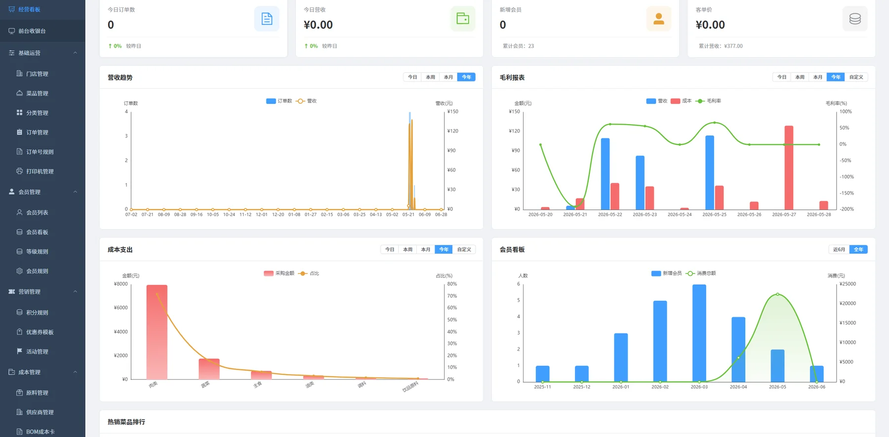
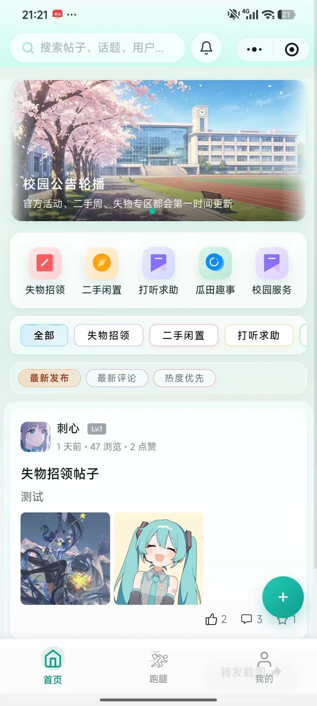
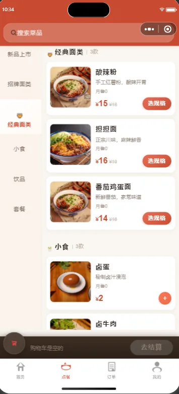
Capability Proof
强项不是只做页面或接口，而是把客户、合同、销售、账单、报表、审批、小程序和文档沉淀串成可追踪、可复用、可持续维护的业务闭环。
客户、合同、销售、账单、财务报表、审批、水电表、商户入驻、收据打印等真实业务模块。
Java、Spring Boot、Vue3、PHP、Hyperf、RESTful API、微信小程序和后台管理页面。
MySQL、Redis、RabbitMQ、Nacos、XXL-Job、Docker、接口联调、日志排查、生产问题修复。
需求分析、技术方案、部署说明、操作文档、禅道任务管理、跨职能沟通和问题定位。
Selected Work
每个项目都保留了真实截图，重点展示业务理解、系统范围和交付证据。
面向个体餐饮商户的前后端分离点餐系统，覆盖小程序点餐、后台管理、订单流转、前台/后厨协同、语音播报、会员、营销、支付、报表和运维文档。
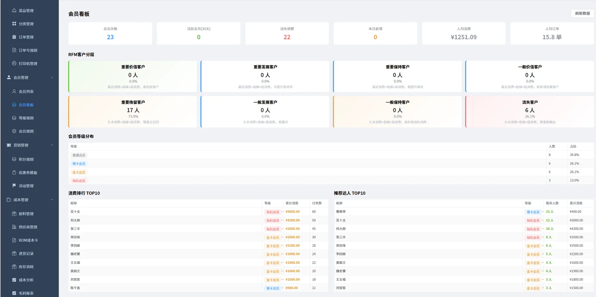
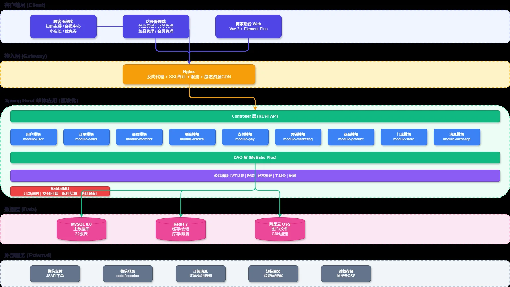
独立完成全栈微信小程序论坛系统，负责需求拆解、数据结构设计、接口开发、前端页面、上线交付和维护。项目已通过“看雪校园”小程序入口上线商用。
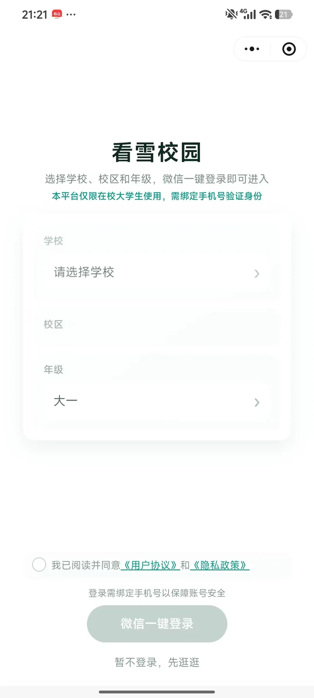
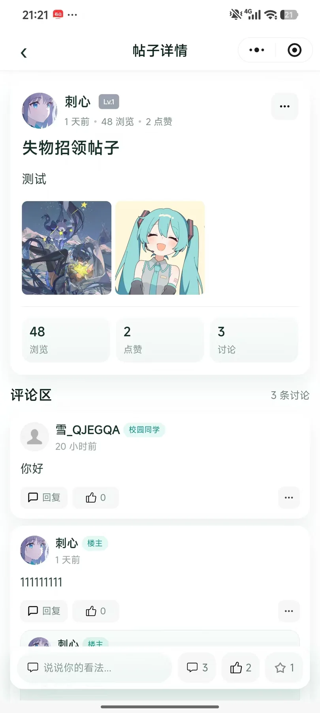
面向小型软件团队与独立工作室设计的内部管理系统，目标是把获客、客户、合同、销售、项目、任务、绩效、知识库和收支管理流程系统化。
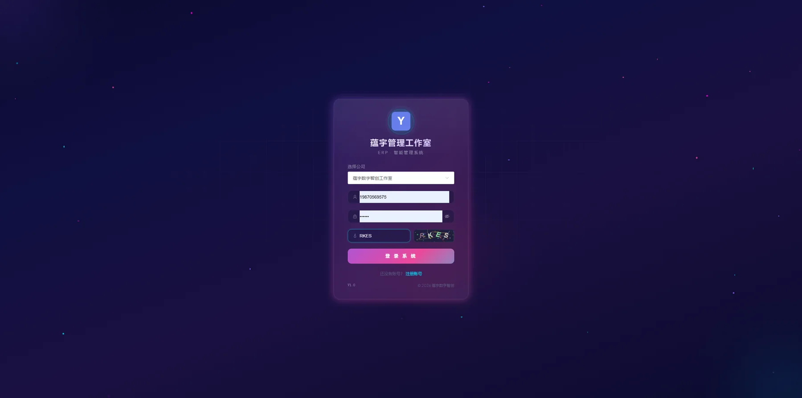
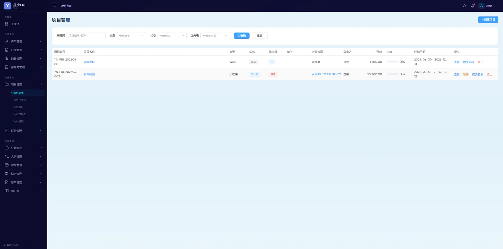
在深圳软件公司参与百万级商业管理 ERP 系统二次开发与维护，负责客户、合同、销售、账单、财务报表、审批和多个小程序业务模块。
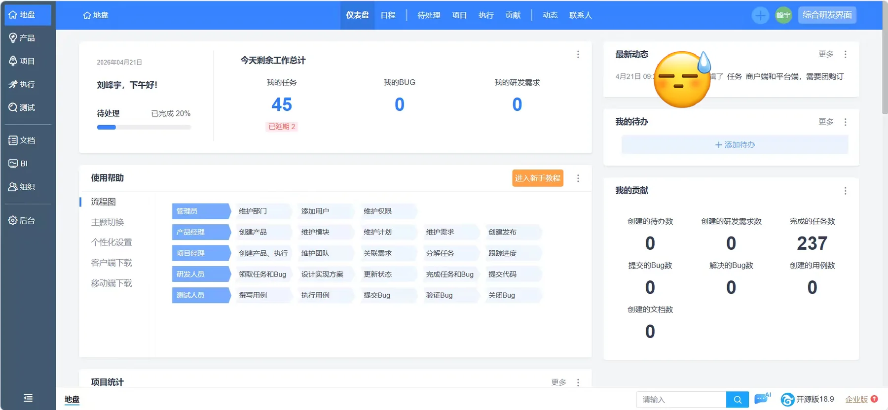
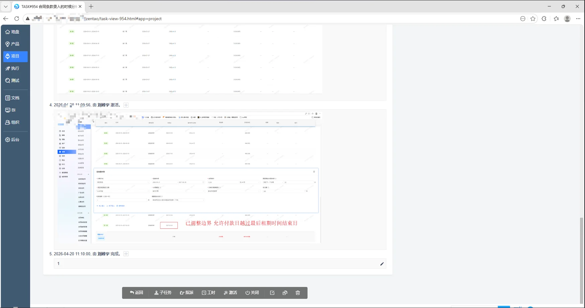
Gallery
按项目筛选，也可以点击任意截图查看大图。
Timeline
以商业 ERP 生产系统经验为主线，持续沉淀内部应用、数据模型、接口集成、问题定位和交付文档能力。
Contact
适合需要全栈开发、内部应用支持、ERP 周边开发、SQL 排查、流程自动化、文档沉淀和跨职能沟通的岗位。